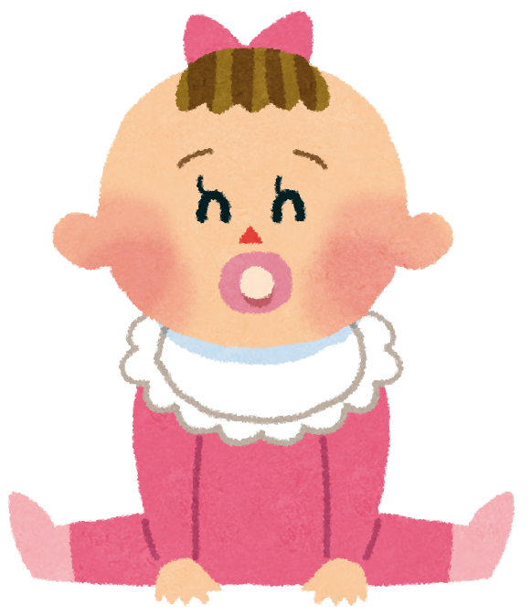
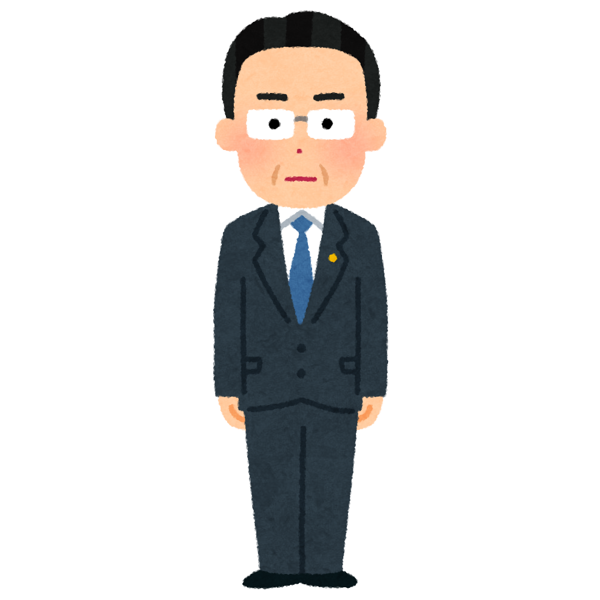
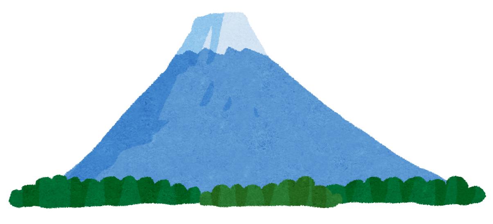
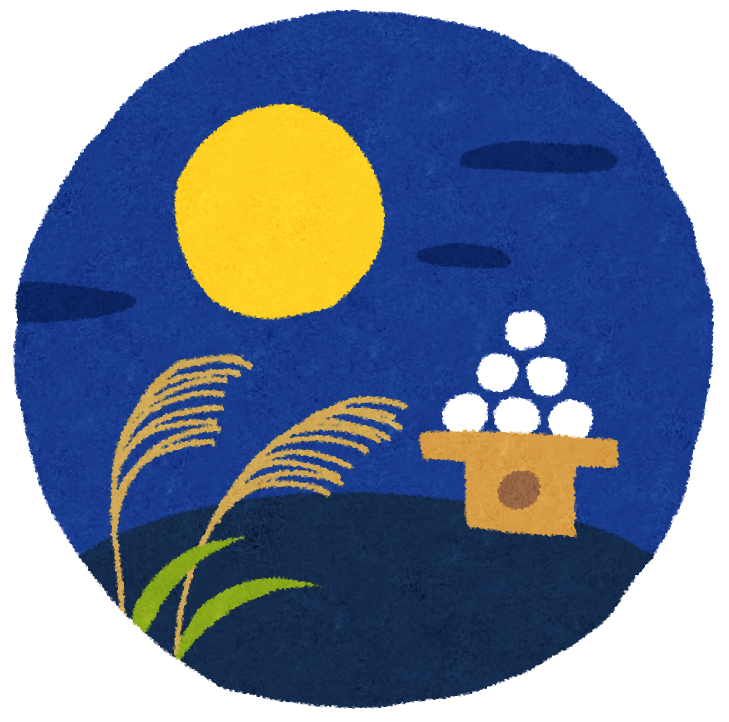
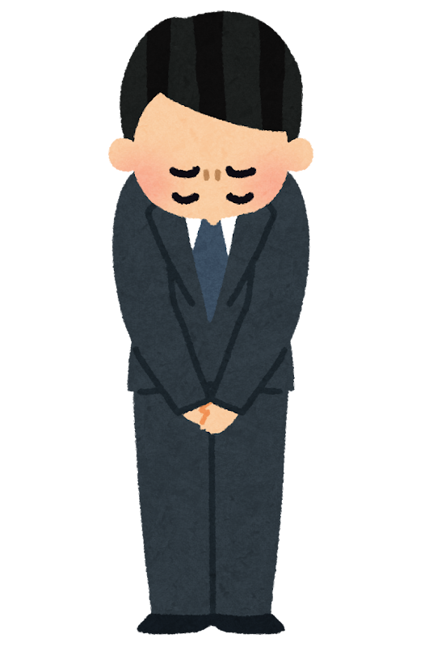
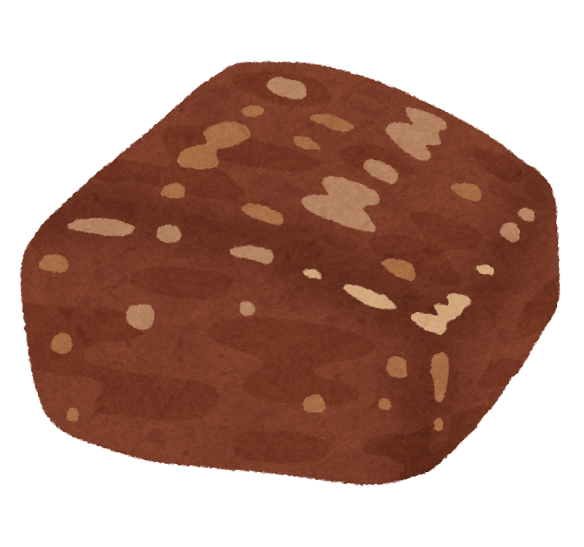
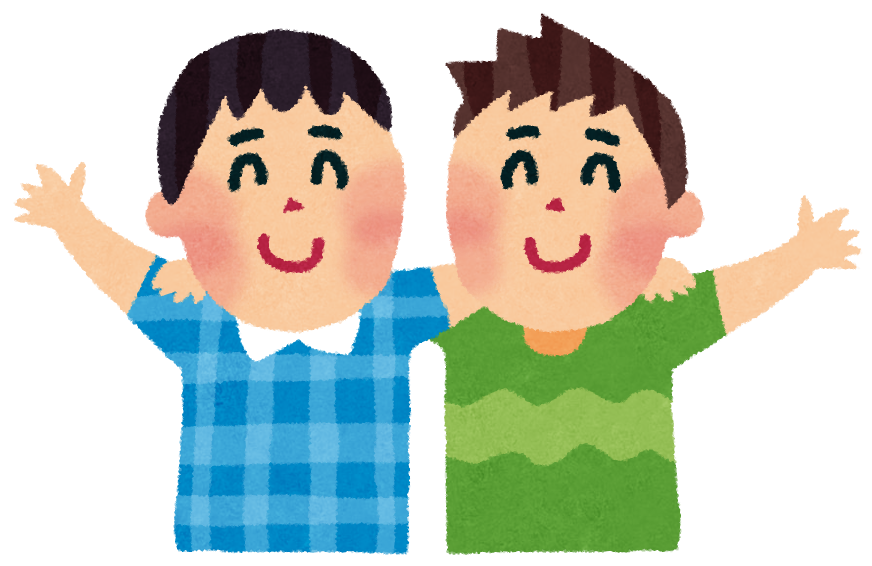
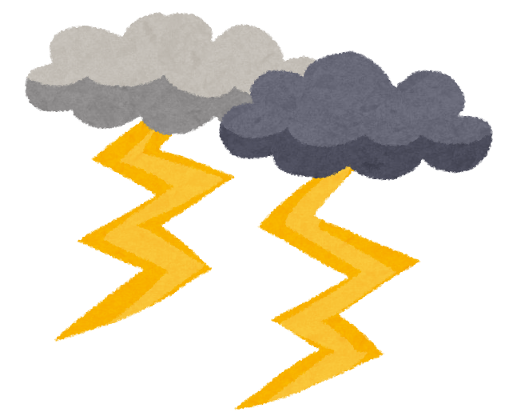

<!DOCTYPE html>
<html>
  <head>
<meta charset="UTF-8">
<title>音声収束に関する産出実験</title>

<script src="https://unpkg.com/jspsych@7.3.2"></script>

<script src="https://unpkg.com/@jspsych/plugin-html-keyboard-response@1.1.2"></script>
<script src="https://unpkg.com/@jspsych/plugin-html-button-response@1.1.2"></script>
<script src="https://unpkg.com/@jspsych/plugin-survey-text@1.1.2"></script>
<script src="https://unpkg.com/@jspsych/plugin-browser-check@1.0.0"></script>
<script src="https://unpkg.com/@jspsych/plugin-preload@1.1.2"></script>
<script src="https://unpkg.com/@jspsych/plugin-html-audio-response@1.0.3"></script>
<script src="https://unpkg.com/@jspsych/plugin-survey-likert@1.1.3"></script>
<script src="https://unpkg.com/@jspsych/plugin-initialize-microphone@1.0.3"></script>

<script src="https://unpkg.com/@jspsych/plugin-survey-multi-choice@1.1.2"></script>
<script src="https://unpkg.com/@jspsych/extension-pipe@0.2.0"></script>

<link href="https://unpkg.com/jspsych@7.3.2/css/jspsych.css" rel="stylesheet"/>
</head>
  <body></body>
  <script>
//initialize jsPsych
const jsPsych = initJsPsych({
  extensions: [
    {
      type: jsPsychExtensionPipe,
      params: {
        experiment_id: "UB6LaNtlJcq9",
        filename: () => `${subject_id}.csv`
      }
    }
  ]
  show_progress_bar: true,
  message_progress_bar: '実験終了まで',
  auto_update_progress_bar: true,
  on_finish: function() {
    window.location = "https://google.com"
  }
});

const images = ['image/img01.png','image/img02.png','image/img03.png','image/img04.png',
'image/img05.png','image/img06.png','image/img07.png','image/img08.png','image/img09.png','image/img10.png',
'image/img11.png','image/img_tokubetu.png'];

const preload = {
    type: jsPsychPreload,
    images: images,
    message: "ローディング中です。少々お待ちください。",
};

var browser_check = {
  type: jsPsychBrowserCheck,
  inclusion_function: (data) => {
    return data.mobile === false
  },
  exclusion_message: (data) => {
    if (data.mobile) {
      return '<p>この実験はパソコンでしか参加できません。</p>';
    } else if (data.browser !== 'chrome') {
      return '<p>この実験はGoogle Chromeからしか参加できません。</p>'
    }
  }
};

//
const welcome = {
  type: jsPsychHtmlButtonResponse,
  prompt: "実験に参加いただきありがとうございます。",
  stimulus: "",
  choices: ["次へ"],
};

// Initializing global variable to store participant information
window.participant_info = {};

const background = {
  type: jsPsychSurveyText,
  questions: [{
    prompt: "<p> あなたの年齢をお答えください。</p>",
    required: true,
    name: 'Age',
  },
  ],
  button_label: "次へ",
  on_finish: function(data) {
    // 修正: 'Account' ではなく 'ID' を使用
    window.participant_info.ID = data.response.ID;
    window.participant_info.Age = data.response.Age;

    var curr_progress_bar_value = jsPsych.getProgressBarCompleted();
    jsPsych.setProgressBar(curr_progress_bar_value + (1/70));
  }
};

const gender = {
  type: jsPsychHtmlButtonResponse,
  stimulus: '<p>あなたのジェンダー（社会的な性）をお答えください。</p>',
  choices: ['女性',
    '男性',
    'それ以外'],
  response_ends_trial: true,
  on_finish: function(data) {
    // 修正: data.responseは選択したボタンのインデックス(0, 1, 2)なので、テキストに変換
    const genderChoices = ['女性',
      '男性',
      'それ以外'];
    window.participant_info.Gender = genderChoices[data.response];

    jsPsych.data.addProperties({
      ID: window.participant_info.ID,
      Age: window.participant_info.Age,
      Gender: window.participant_info.Gender
    });

    var curr_progress_bar_value = jsPsych.getProgressBarCompleted();
    jsPsych.setProgressBar(curr_progress_bar_value + (1/70));
  }
};

const birthplace = {
  type: jsPsychSurveyText,
  questions: [{
    prompt: "これまでに住んできた場所をお答えください。<br>\
    例: 0-5歳 兵庫県神戸市、5-18歳 兵庫県西宮市、18-42歳 大阪府大阪市",
    required: true,
    horizontal: true,
    name: 'birthplace'
  }],
  button_label: '次へ',
};

var end_info = {
  type: jsPsychHtmlKeyboardResponse,
  stimulus: '<p>参加者情報の入力が完了しました。</p><p>これから実験の練習を開始します。何かキーを押して続行してください。</p>',
};

var instruction = {
  type: jsPsychHtmlKeyboardResponse,
  stimulus: '<p>あなたが本実験で行う作業は\
  <strong>画面に表示されたことばを発音する</strong>ことです。<br>発音する際には\
  あなたの方言・ことばでお話しください。<br><strong>ふだん仲の良い地元の友達に話すように</strong>\
  発音しましょう。<br>また、音声を録音するため、この作業は<strong>他の人やテレビの音のない静かな部屋</strong>\
  で行ってください。またあなたのコンピューターのマイクで録音します。<strong>次の画面でマイクの許可を求めますので必ず\
  マイクを許可してください。</strong><br>\
  理解したらどれかのキーを押して続行してください。</p>',
};

var initialize_mic = {
  type: jsPsychInitializeMicrophone,
  device_select_message: 'これは被験者にマイクを許可してもらうための試行です。<br>\
「マイクを許可してください」というメッセージが表示された場合は許可してください。',
  button_label: 'マイクを許可した: 次へ進む'
};

//Testing understandings of instructions

let testAccuracy = 0;

const test = {
  type: jsPsychSurveyMultiChoice,
  preamble: "<p>実験の手順について確認します。先ほど見たあなたがこの作業で行う内容に関する問題です。</p>",
  questions: [{
    prompt: "この実験で行う内容について正しいものを選んでください。",
    options: ["音声を聞いてそれを真似しなくてはいけない。",
      "画面に表示されたことばを発音しなくてはいけない。"],
    required: true,
    name: "audio_understand",
  },
    {
      prompt: "あなたが実験を行う環境として適切なものを選んでください。",
      options: ["耳で聴いて分かるような大きさの工事現場の騒音が聞こえる部屋。",
        "家族やテレビの音が一切聞こえない静かな部屋でコンピュータのマイクを許可する。",
        "静かな部屋だがコンピュータの設定でマイクをオフにしている。"],
      required: true,
      name: "task_understand",
    },

    {
      prompt: "ことばを読む時はどのように発音しますか？適切なものを選んでください。",
      options: ["仲のいい地元の友達と話す時のように話す。",
        "テレビのアナウンサーが話す時のように丁寧に話す。",
        "職場の上司や学校の先生に話しかける時のように話す。"],
      required: true,
      name: "nonce_understand",
    }],

  button_label: "回答を完了する。",
  on_finish: function(data) {

    testAccuracy = 0;

    testAccuracy += Number(data.response["audio_understand"] === "画面に表示されたことばを発音しなくてはいけない。");
    testAccuracy += Number(data.response["task_understand"] === "家族やテレビの音が一切聞こえない静かな部屋でコンピュータのマイクを許可する。");
    testAccuracy += Number(data.response["nonce_understand"] === "仲のいい地元の友達と話す時のように話す。");

    testAccuracy = testAccuracy / 3;
  },
};


// If the response is not correct, the instruction is shown one more time.

const notifyagain = {
  type: jsPsychHtmlButtonResponse,
  stimulus: "あなたの回答には実験の手順に関して誤りがありました。"+
  "もう一度手順を読んで確認してください。<br>",
  choices: ["もう一度確認する。"],
};
const notifytlOneMore = {
  timeline: [notifyagain],
  conditional_function: function() {
    return testAccuracy !== 1
  }
};

// If the response is correct, I appreciate a participant to understand my intension properly. After confirmation,\
//The timeline goes to experiment section.

const Correct = {
  type: jsPsychHtmlButtonResponse,
  stimulus: "あなたの回答は全問正解でした！" +
  "実験の手順に関して正しく理解してくださりありがとうございます。 <br>" +
  "それではこれから実験の練習課題を行います。<br>",
  choices: ["次へ"],
};

const notifyCorrect = {
  timeline: [Correct],
  conditional_function: function() {
    return testAccuracy === 1
  }
}

// Run conditionnally instruction and test section
const inst_test = {
  timeline: [instruction,
    test,
    notifytlOneMore,
    notifyCorrect],
  loop_function: function() {
    return testAccuracy !== 1;
  }
};

//practice task
var practice= {
  type: jsPsychHtmlAudioResponse,
  stimulus: "</img><p>「特別」</p>",
  recording_duration: 20000,
  allow_playback: true,
  show_done_button: true,
  done_button_label: '録音が完了しました。',
  accept_button_label: '完成しました。次へ',
  record_again_button_label: 'もういちど録音する。'
};


//Main task
//Target words
var item_list = [{
  data: {
    "type": "osaka",
    "target_filler": "target",
    "no": "01",
    "item_kana": "あかちゃん",
    "item": "赤ちゃん",
    "item_ro": "akachan",
    "output": "あかちゃん",
    "julius": "あかちゃん",
    "HLLL": "yes",
    "presence_u": "no"
  },
  "stimulus": "</img><p>「赤ちゃん」</p>"
},

  {
  data: {
    "type": "osaka",
    "target_filler": "target",
    "no": "02",
    "item_kana": "だいじん",
    "item": "大臣",
    "item_ro": "daijin",
    "output": "だいじん",
    "julius": "だいじん",
    "HLLL": "yes",
    "presence_u": "no",
  },
  "stimulus": "</img><p>「大臣」</p>"
},

  {
  data: {
    "type": "osaka",
    "target_filler": "target",
    "no": "03",
    "item_kana": "ふじさん",
    "item": "富士山",
    "item_ro": "fujisan",
    "output": "ふじさん",
    "julius": "ふじさん",
    "HLLL": "yes",
    "presence_u": "no",
  },
  "stimulus": "</img><p>「富士山」</p>"
},

{
  data: {
    "type": "osaka",
    "target_filler": "target",
    "no": "04",
    "item_kana": "かんぬし",
    "item": "神主",
    "item_ro": "kannushi",
    "output": "かんぬし",
    "julius": "かんぬし",
    "HLLL": "yes",
    "presence_u": "yes"
  },
  "stimulus": "</img><p>「神主」</p>"
},

{
  data: {
    "type": "osaka",
    "target_filler": "target",
    "no": "05",
    "item_kana": "めいげつ",
    "item": "名月",
    "item_ro": "meigetsu",
    "output": "めーげつ",
    "julius": "めーげつ",
    "HLLL": "yes",
    "presence_u": "yes",
  },
  "stimulus": "</img><p>「名月」</p>"
},

{
  data: {
    "type": "osaka",
    "target_filler": "target",
    "no": "06",
    "item_kana": "はくじょう",
    "item": "白状",
    "item_ro": "hakujoo",
    "output": "はくじょー",
    "julius": "はくじょー",
    "HLLL": "yes",
    "presence_u": "yes",
  },
  "stimulus": "</img><p>「白状」</p>"
},

//Filler items
{
  data: {
    "type": "osaka",
    "target_filler": "filler",
    "no": "07",
    "item_kana": "かたまり",
    "item": "かたまり",
    "item_ro": "katamari",
    "output": "かたまり",
    "julius": "かたまり",
    "HLLL": "no", //HHHH, LHHH
    "presence_u": "no", 
  },
  "stimulus": "</img><p>「かたまり」</p>"
},

{
  data: {
    "type": "osaka",
    "target_filler": "filler",
    "no": "08",
    "item_kana": "ともだち",
    "item": "友達",
    "item_ro": "tomodachi",
    "output": "ともだち",
    "julius": "ともだち",
    "HLLL": "no", //HHHH, LHHH
    "presence_u": "no", 
  },
  "stimulus": "</img><p>「友達」</p>"
},

{
  data: {
    "type": "osaka",
    "target_filler": "filler",
    "no": "09",
    "item_kana": "かみなり",
    "item": "雷",
    "item_ro": "kaminari",
    "output": "かみなり",
    "julius": "かみなり",
    "HLLL": "no", //HHHL, LHHL
    "presence_u": "no", 
  },
  "stimulus": "</img><p>「雷」</p>"
},

{
  data: {
    "type": "osaka",
    "target_filler": "filler",
    "no": "10",
    "item_kana": "むらさき",
    "item": "紫",
    "item_ro": "murasaki",
    "output": "むらさき",
    "julius": "むらさき",
    "HLLL": "no", //LHLL, LHLL
    "presence_u": "yes", 
  },
  "stimulus": "</img><p>「紫」</p>"
},

{
  data: {
    "type": "osaka",
    "target_filler": "filler",
    "no": "11",
    "item_kana": "べんごし",
    "item": "弁護士",
    "item_ro": "bengoshi",
    "output": "べんごし",
    "julius": "べんごし",
    "HLLL": "no", //LLHL, LHHL
    "presence_u": "no", 
  },
  "stimulus": "</img><p>「弁護士」</p>"
},
];

// ランダマイズ
var shuffledArray = jsPsych.randomization.shuffle(item_list);

var record = {
  type: jsPsychHtmlAudioResponse,
  stimulus: jsPsych.timelineVariable("stimulus"),
  data: jsPsych.timelineVariable('data'),
  recording_duration: 20000,
  allow_playback: true,
  done_button_label: '録音が完了しました。',
  accept_button_label: '完成しました。次へ',
  record_again_button_label: 'もういちど録音する。'

};

// シャッフルされたリストを読み込ませる
var record_timeline = {
  timeline: [record],
  timeline_variables: shuffledArray,
};


//debriefing session
const end_task = {
  type: jsPsychHtmlKeyboardResponse,
  stimulus: "<p>本実験の作業は終了です。最後にこの実験に参加してみての\
  あなたの意見について尋ねます。<br>頂いたご意見は今後実施する本実験に生かしますので<strong>遠慮のない率直な意見</strong>\
  を頂けますと幸いです。<br>5段階の後の記述回答は任意ですがぜひ書いてくださると参考になります。</p>"
};

var likert_evaluate = [
  "全くそう思わない", 
  "どちらかといえばそう思わない", 
  "どちらとも言えない", 
  "少しそう思う", 
  "とてもそう思う"
];

var likert_length = [
  "非常に短かった",
  "少し短かった",
  "ちょうどいい長さだった",
  "少し長かった",
  "非常に長かった"];

var debrief_likert = {
  type: jsPsychSurveyLikert,
  questions: [
    {prompt: "作業に関する指示はわかりやすく、スムーズに参加できた。", name: 'clarity_inst', labels: likert_evaluate},
    {prompt: "録音は問題なく簡単に行うことができた。", name: 'easy_record', labels: likert_evaluate},
    {prompt: "作業にかかる長さはいかがでしたか？", name: 'length', labels: likert_length},
  ],
  randomize_question_order: false
};

const debrief_type = {
  type: jsPsychSurveyText,
  questions: [
    {prompt: "「作業に関する指示はわかりやすく、スムーズに参加できた。」\
    についてあなたがそう思った理由をお聞かせください。"},
    {prompt: "「録音は問題なく簡単に行うことができた。」\
    についてあなたがそう思った理由をお聞かせください。"},
    {prompt: "「作業にかかる長さはいかがでしたか？」\
    についてあなたがそう思った理由をお聞かせください。"},
    {prompt: "その他あなたが思ったことがありましたらぜひお聞かせください。"},
    ],
    randomize_question_order: false,
    required: false,
};

var goodbye = {
  type: jsPsychHtmlButtonResponse,
  stimulus: '<p>ご回答ありがとうございました。</p>',
  choices: ['実験を終了する。'],
  response_ends_trial: true,
};

const subject_id = jsPsych.randomization.randomID(10);


//Timeline
const Timeline = [
  preload,
  browser_check,
  welcome,
  background,
  gender,
  birthplace,
  end_info,
  instruction,
  inst_test,
  initialize_mic,
  practice,
  record_timeline,
  end_task,
  debrief_likert,
  debrief_type,
  goodbye,
];

//Run the experiment
jsPsych.run(Timeline)
  </script>
</html>
